Symposium on Theory in HCI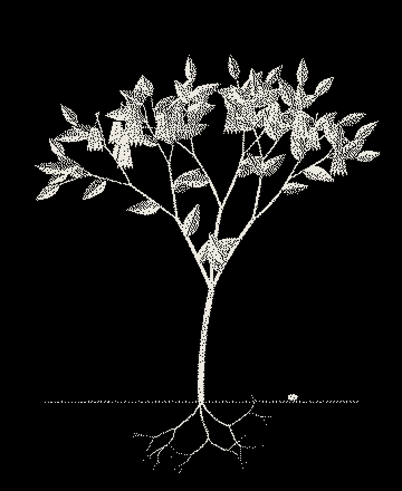
We invite you to join our symposium that aims to introduce, motivate, and sensitise the awareness, use, and development of theory in HCI for researchers in the Greater Bay Area.
We encourage exchange and connection between HCI researchers in the region who share an interest in theory, over two days.
Joanna BergströmUniversity of Copenhagen Kasper HornbækUniversity of Copenhagen
Can LiuCity University of Hong Kong
Tao LuoSUSTech Xiaojuan MaHKUST Difeng YuNanjing University
Shengdong ZhaoCity University of Hong Kong
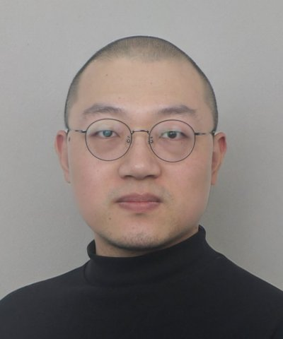
Qiushi ZhouHKUST(GZ)Theory as Organon: Why and how do we do theory in HCI?
Research in human-computer interaction (HCI) deals with a host of emerging phenomena created by new technologies, new uses of them, new user groups, and the proliferation of computing into ever more areas of life. At the same time, research seeks to generalize and cumulate across these particulars, often through theoretical contributions and claims intended to apply across settings. This talk argues that both the particular and the general are crucial to an adequate understanding of phenomena in HCI. It discusses the problems that arise when research focuses primarily on either, and the challenges involved in moving between and connecting the two. The central argument is that progress in HCI depends not on choosing between the particular and the general. Instead, HCI advances when particulars challenge our abstractions, and abstractions change how we understand the particulars.
Human perception, learning, and decision-making can be described by a small set of mathematical models, and these models increasingly shape how we understand and design interaction. This talk traces that body of work through a few formulas, each presented at an intuitive level. It begins with laws familiar to HCI researchers, Fitts' law and the Hick–Hyman law, which predict performance without explaining it. It then introduces models that supply explanations. Bayesian cue combination treats perception as inference from unreliable signals. Prediction-error learning accounts for how people adapt through experience. Drift diffusion and prospect theory describe choice under noise and risk. The talk then presents resource rationality, which unifies these models by treating behavior as the best use of limited information and limited cognitive computation, and shows how computational rationality carries this view into HCI. It closes with recent efforts to learn models of human behavior directly from large datasets, including foundation models of cognition. These efforts raise an open question for the field: what counts as an explanation of user behavior when prediction and interpretability diverge? No mathematical background beyond basic probability is assumed.
As the integration of artificial intelligence (AI) increasingly automates the design, operation, and study of computing systems, the paradigm of "human-centered computing" (HCC) is undergoing a fundamental redefinition. Traditionally, HCC views the "human" as a user in the system loop, a source of training/testing data, or a final recipient of computing services. However, such human-computer relationship and dynamics have shifted radically under the emerging technological landscape dominated by large AI models and autonomous agents. Consequently, conventional human-centered conceptualization and design methodologies require profound adjustment, prompting researchers to rethink the core priorities of future computing. This talk explores diverse theoretical frameworks and methodological practices aimed at reshaping the "centeredness" principles within human-computer interaction (HCI).
Theory is often treated as a cornerstone of research, including in human-computer interaction (HCI). Yet its role in HCI has been contested for decades. Some question what theory can realistically contribute to the design and understanding of interactive systems; others have argued that theoretical development in HCI remains limited, and empirical studies have often shown limited use of theory. At the same time, HCI poses distinctive challenges for theoretical research, including rapidly changing technologies and practices and a need to inform design. In this talk, I will introduce TRACTION (Theoretical Research in Human-Computer Interaction), a research center supported by the VILLUM Foundation that seeks to advance theoretical research in HCI. The center has four main goals: to describe how theory is currently used and developed in HCI; to develop and test approaches for building theory; to advance theoretical work on key conceptual problems in the field; and to develop resources that can support HCI researchers in doing theoretical work. I will outline these goals and illustrate them through examples from our work, including studies of how HCI researchers build theory and attempts to develop new ways of working with theory.
Designing efficient selection techniques for graphical user interfaces (GUIs) is fundamental in human-computer interaction research. The field of motor control has developed models to understand how goal-directed reaching movements, such as target selection in GUIs, are planned and executed, which can inform the design of selection techniques. However, it is non-trivial to derive techniques directly from models because the aims differ: motor control models aim to understand and predict how selection occurs, whereas interaction techniques in HCI aim to improve selection. In this talk, I will first provide an overview of three main types of motor control models: information-theoretical models, control-theoretical models, and process models. I will then introduce a method, called justified concepts, for deriving interaction techniques based on models, which will lead to techniques with stronger theoretical support.
An interaction technique maps a user's movement to an effect, and that mapping has to be learned. Yet the movement theories most used in HCI describe how people perform once a mapping is learned, not how they get there. In this talk I argue that motor learning, a field of neuroscience, offers theory for that gap, and I use it as a case of borrowing theory from another discipline. I show three things we have taken from it: concepts that characterise a technique by the kind of learning it demands, either adapting an existing controller or building a new one; experimental paradigms that reveal after-effects and savings that completion time hides; and models of sensory feedback that let us reason about a design before building it. Drawing on our studies of virtual reality techniques, I also show what the borrowing cost: the concepts, measures, and models have to be rebuilt to fit HCI tasks, but in return they might contribute back to neuroscience. I close with what remains open, including the difference between learning to control a body and a tool.
Why does writing by speaking feel so different from writing by hand or keyboard? This talk introduces several theories from cognitive science and linguistics that help explain the difference. Hyperarticulation describes how speakers adapt their articulation to the listener, including to machines. Accounts of the flow of consciousness describe how spoken thought unfolds in short, unrevised bursts. Fuzzy Trace Theory explains why we keep the gist of what we said but quickly lose the exact words. This talk will discuss what these theories tell us about speech as an input modality, and how they might inform the design of speech input interfaces in HCI.
Interaction technique is among the most familiar concepts in HCI and among the least precisely specified. Modeling an interaction technique requires capturing its relevant physical structure, causal relationships, and temporal behavior simultaneously — yet existing taxonomies, design spaces, and specification languages organize interaction by modality, device, or implementation, leaving its underlying structure — how user operations correspond to system feedback over time — without a characterization that is both modality-independent and mathematically precise. This talk briefly presents the Operation–Feedback Correspondence (OFC) framework to fill this gap. Grounded in category theory, the framework models interactive properties as persistence modules and interaction mappings as natural transformations, and proves that any coherent correspondence between operations and feedback must be one of exactly two types, Absolute or Relative — a mathematical necessity, not a design choice. This result makes ill-formed mappings detectable and cross-modal equivalences derivable. By revealing a structural layer common to all interaction techniques, OFC provides an explanatory foundation that makes interaction knowledge cumulative, transferable, and reusable across existing and emerging interactive technologies. In particular, the cross-modal equivalence between a pitch and a pinch is not an independent, tangential claim: it follows from the same structural result once operation–feedback correspondence is defined at this level.
Following the four talks, all of the day’s speakers sit together on stage for an open panel discussion.
Qiushi will read aloud the theory cards that students submitted beforehand, and asks the relevant speakers to discuss each one.
Questions for everyone who registers. Your answers will help us understand the current status of HCI theory in the region, and will be discussed at the panels.